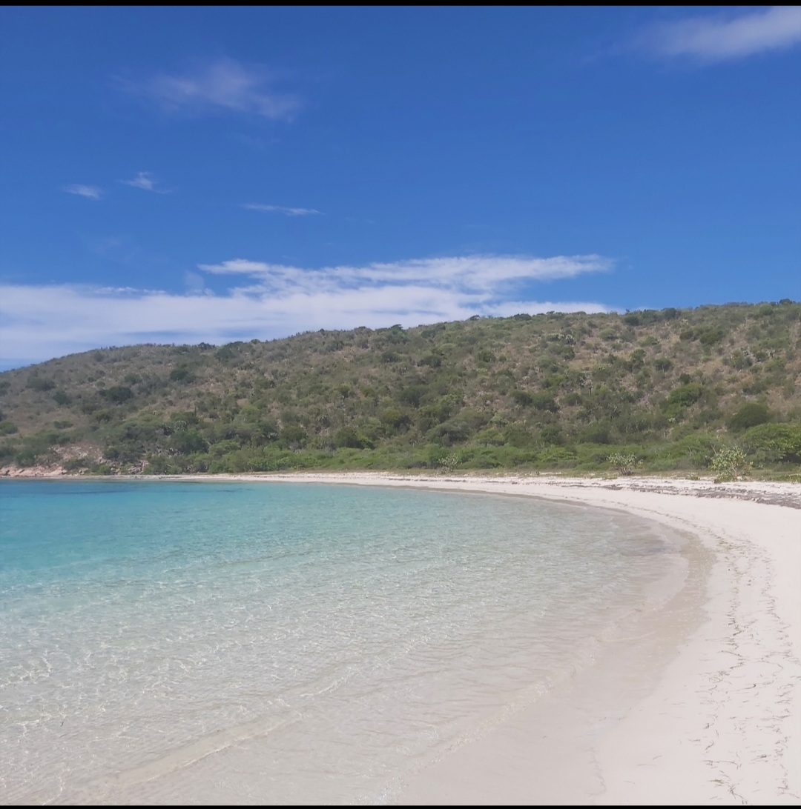

About me
My name is Imanol Matos and I am 23 years old. I am from the Dominican Republic and I live with my family in the south parth of the country. I am currently serving as the secretary of my branch and I am studying Applied Technology. I like to play basketball, play the guitar and watching classic films.
Dominican Republic

The Dominican Republicated is a country located in the caribbean and is famous thanks to the excellent beaches, the music like Merengue and Bachata an its gastronomy and people. Every year thousands of tourists visits this beautiful country and enjoy diffrents activities. One zone that is very popular is Punta Cana.